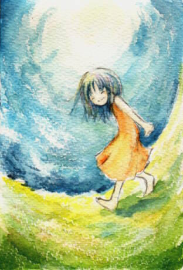

…… ルイシャ-しあわせの風 ……

ううん もう よくなったの。
だからおにいちゃん はやく はやくぅ！
2003.1 コットマン水彩紙/ヴァンゴッホ固形水彩
s.story「しあわせの風」よりルイシャ。
幸せな笑顔が描きたかったようです。
最近どうにも水彩っぽい絵を描いてないなぁと思って、
こんな風に塗ってみました。あれ、単に雑なだけ……？
筆洗出すのが面倒だったので（…）久々に水筆なんぞ使ってます。
結構愛用してるんですけどね、水筆。
--
｜
→